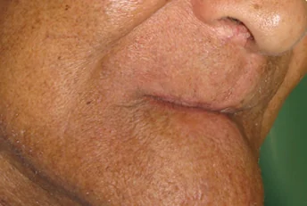
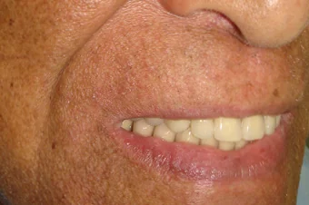
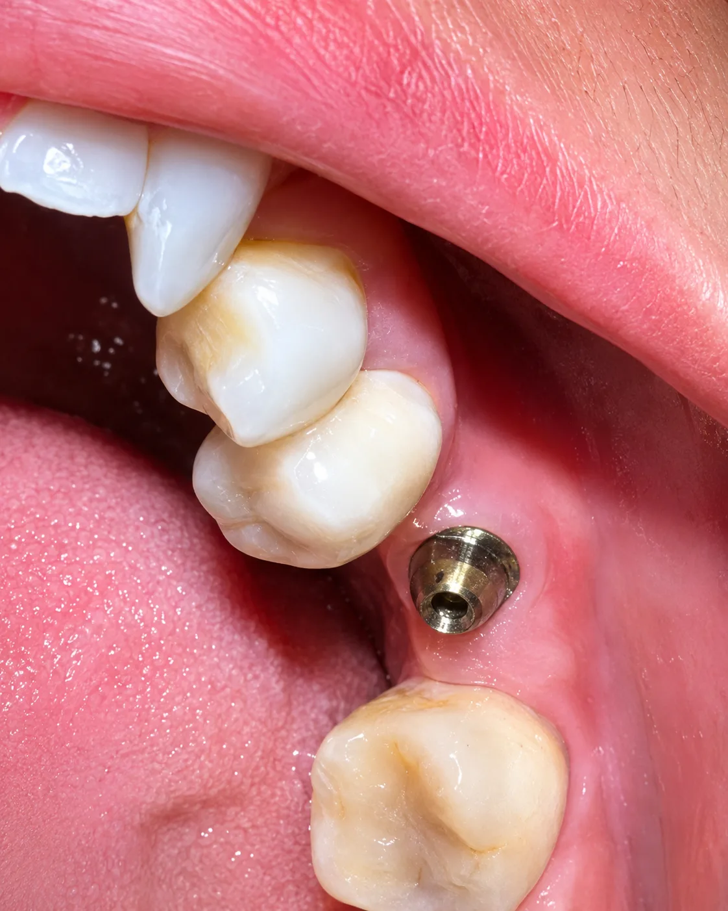
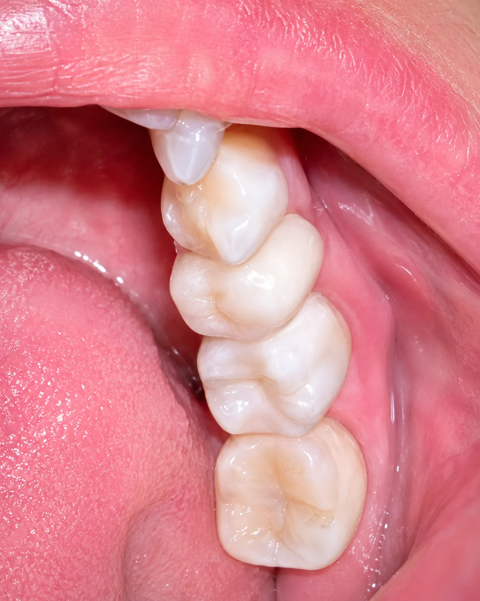
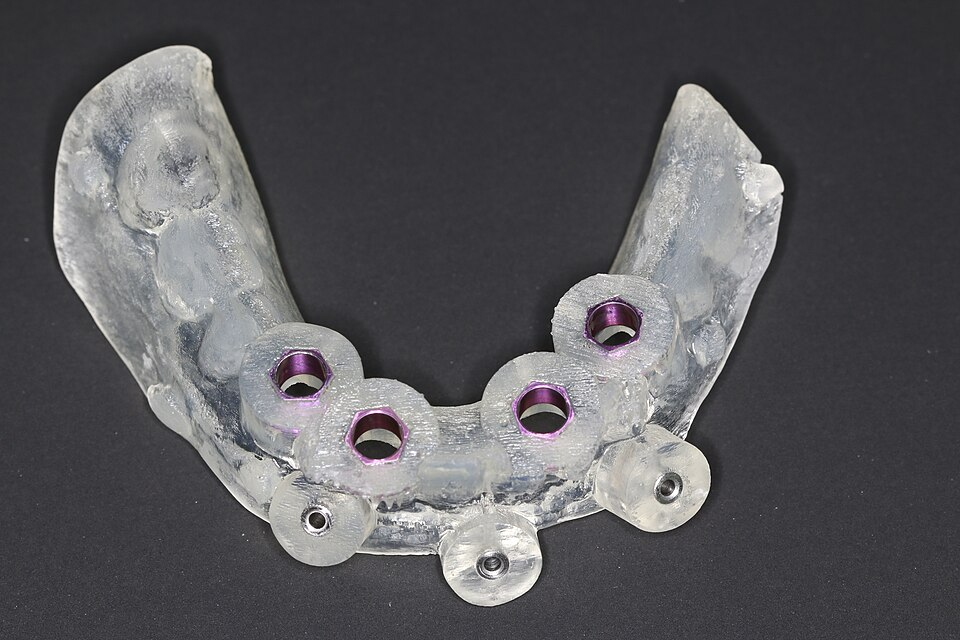

Antes
Depois


Protocolo sobre implantes
Estrutura extensa em zircônia estratificada, com atenção à dimensão vertical, passividade e caracterização gengival.
Implantes Zircônia
Antes
Depois


Facetas em zircônia
Planejamento anterior para fechamento de diastemas, ajuste de proporção e controle de textura superficial.
Facetas
Antes
Depois


PPR com gancho estético
Removível com retentores estéticos em região aparente, buscando retenção sem chamar atenção no sorriso.
PPR / Removíveis
Antes
Depois


Prótese Total
Montagem total com caracterização gengival, seleção de dentes e acabamento de bordas para melhor adaptação.
Removíveis Acrílico
Antes
Depois


Coroas sobre implante
Coroas posteriores sobre implante com foco em perfil de emergência, contatos e adaptação marginal.
Implantes
Guia cirúrgico planejado
Guia produzido a partir do planejamento digital, com encaixe, janelas de conferência e orientação cirúrgica.
Guias & Placas Digital